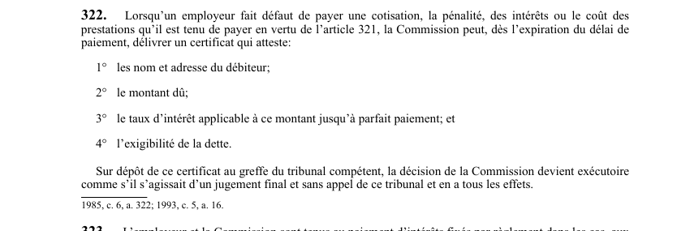

art-322-LATMP : certificat de recouvrement d'une cotisation impayée
Outil de recouvrement que la Commission peut utiliser contre l'employeur qui ne paie pas ce qu'il doit.
- Déclencheur : défaut de payer une cotisation, la pénalité, les intérêts ou le coût des prestations dus en vertu de l'article 321.
- La Commission peut délivrer le certificat dès l'expiration du délai de paiement, sans autre formalité.
- Le certificat atteste quatre éléments : nom et adresse du débiteur, montant dû, taux d'intérêt applicable jusqu'à parfait paiement, exigibilité de la dette.
- Sur dépôt au greffe du tribunal compétent, la décision de la Commission devient exécutoire comme s'il s'agissait d'un jugement final et sans appel de ce tribunal, avec tous ses effets.
🌐 LegisQuébec · 📄 PDF officiel (page 81)
Texte officiel
Lorsqu’un employeur fait défaut de payer une cotisation, la pénalité, des intérêts ou le coût des prestations qu’il est tenu de payer en vertu de l’article 321, la Commission peut, dès l’expiration du délai de paiement, délivrer un certificat qui atteste:
1° les nom et adresse du débiteur;
2° le montant dû;
3° le taux d’intérêt applicable à ce montant jusqu’à parfait paiement; et
4° l’exigibilité de la dette.
Sur dépôt de ce certificat au greffe du tribunal compétent, la décision de la Commission devient exécutoire comme s’il s’agissait d’un jugement final et sans appel de ce tribunal et en a tous les effets.
Texte de l’article 322 LATMP, extrait de la couche texte du PDF officiel (page 81), sans OCR ni retouche. La capture ci-dessous et le PDF font foi.
{kind=link}

Toucher l'image pour l'agrandir🔗 Ouvrir a cette page : LATMP.pdf : page 81 · texte a jour au 20 février 2024
Voir aussi
- art. 321 · interdiction : cotisation.
- art. 325 · procédure : l'avis de cotisation, y compris le montant de la pénalité et des intérêts imposés à l'employeur, constitue une décision de la CNESST (et est donc susceptible de contestation).
- ↑ Loi : LATMP
Pages qui pointent ici (3)
- art-170.4-LATMP : sanction pécuniaire du refus de réintégration Recueil législatif
- art-321.1-LATMP : défaut de versement périodique Recueil législatif
- art-325-LATMP : avis de cotisation (décision) Recueil législatif